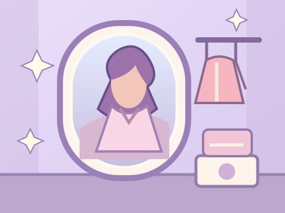

01 / 学习中
在技术里寻找答案
计算机技术专业背景，关注 AI 教育与时间序列预测。喜欢从一个具体问题出发，一点一点验证自己的想法。
AI / RESEARCH你好，我是 THQ。一名在人工智能领域持续学习的探索者。平时研究技术如何帮助人理解世界，也喜欢摄影、Cosplay 和游戏带来的奇妙瞬间。
01 / GET TO KNOW ME
研究和兴趣是两种不同的探索方式。前者让我认真追问“为什么”，后者提醒我保留对日常的热情。
计算机技术专业背景，关注 AI 教育与时间序列预测。喜欢从一个具体问题出发，一点一点验证自己的想法。
AI / RESEARCH喜欢拍照、Cosplay 和 ACG 文化，也常在游戏里和朋友相遇。镜头与屏幕之外，是值得收藏的普通日子。
LIFE / HOBBIES02 / CURRENT EXPLORATIONS
这里放着三个让我持续思考的方向。
点按左右箭头，看看不同的研究主题。
TIME-SERIES FORECASTING
在时间序列预测中，历史相似的片段不一定拥有相似的未来。我正在关注检索增强方法什么时候有效、什么时候反而产生干扰。
小提示：轮播区域获得键盘焦点后，也可以使用左右方向键切换。
03 / LITTLE MOMENTS
如果把生活做成相册，
我想为这些瞬间留出位置。



* 当前展示的是本项目原创 SVG 插画。你可以把 assets 中的图片替换成自己的摄影或 Cosplay 作品。
04 / TECH FOR GOOD
我相信技术应该让知识更容易被理解与使用。因此，在学习 AI 的同时，我也关注教育场景中的公平、数据隐私和信息无障碍。这张网页特意加入了键盘焦点提示、图片替代文字和减少动态效果的适配。
和我交换一个想法05 / LEAVE A NOTE
最近有什么值得分享的灵感？试着在这里写一句话。这个表单是课程实验的交互演示，内容只保存在你当前浏览器中，不会发送给任何人。